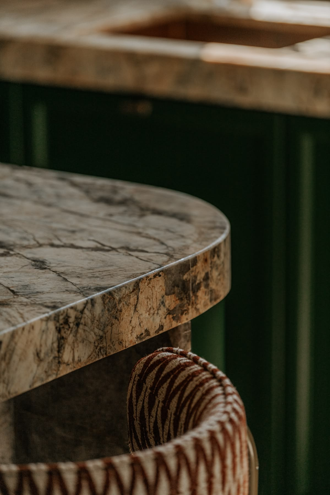

01 — A Personal Introduction
A Little About Me
I am Rylee Gillies, a creative professional with a background in business management, real estate, and live entertainment. My interests lie at the intersection of design, culture, and the human experience.
I believe thoughtfully designed spaces have the power to influence how people connect, feel, and experience the world around them. My approach combines creative curiosity with an appreciation for functionality, thoughtful planning, and meaningful storytelling.

02 — My Background
A Background in Spatial Storytelling.
My path into interior design is informed by hands-on experience in spatial storytelling, real estate, and large-scale environments. With a bachelor's degree in Business Management and a multidisciplinary background spanning marketing, live event production, tradeshow operations, and real estate, I bring a systems-aware and people-centered perspective to interior design.
From 2020–2025, I worked with professional sports organizations including the Utah Jazz, Washington Nationals, Utah Grizzlies, and Utah Warriors, contributing to immersive fan environments through media, experience design, and spatial storytelling. Working in high-energy, large-scale settings sharpened my sensitivity to atmosphere, circulation, and emotional engagement, deepening my understanding of how spatial decisions shape movement, mood, and memory.
03 — Creative Perspective
Translating Identity into Space.
Currently, as a Tradeshow Coordinator for a rapidly growing national beverage brand, I plan and execute spatial environments across more than 150 annual events. Overseeing booth layouts, vendor coordination, and on-site installation has strengthened my ability to translate brand identity into physical environments while managing the technical and logistical systems required to bring those environments to life.
My background in real estate has further shaped my perspective, strengthening my understanding of how layout, flow, and environmental details influence decision-making, comfort, and connection.
I am particularly interested in the intersection of heritage, materiality, and memory, and in creating interiors that foster connection and belonging.
04 — A Creative Vision
House of Rými
A creative practice rooted in narrative, identity, and place.
I am drawn to interior design as a discipline that merges function, storytelling, and human experience. I am particularly interested in the relationship between heritage, materiality, memory, and the ways people connect with their surroundings. My goal is to create spaces that are both strategically grounded and emotionally resonant, balancing thoughtful functionality with a strong sense of identity and place. Through House of Rými, I am beginning to develop a creative practice centered on narrative, identity, and spatial experience, while building the academic and technical foundation to pursue postgraduate studies in interior design in the United Kingdom.
As I continue developing my knowledge and pursuing further education in interior design, I look forward to exploring how meaningful spaces can bring people, experiences, and ideas together.
VIEW MY RESUMEThank You for Being Here.
I invite you to explore my work and follow along as I continue developing my creative practice.
EXPLORE MY PORTFOLIO